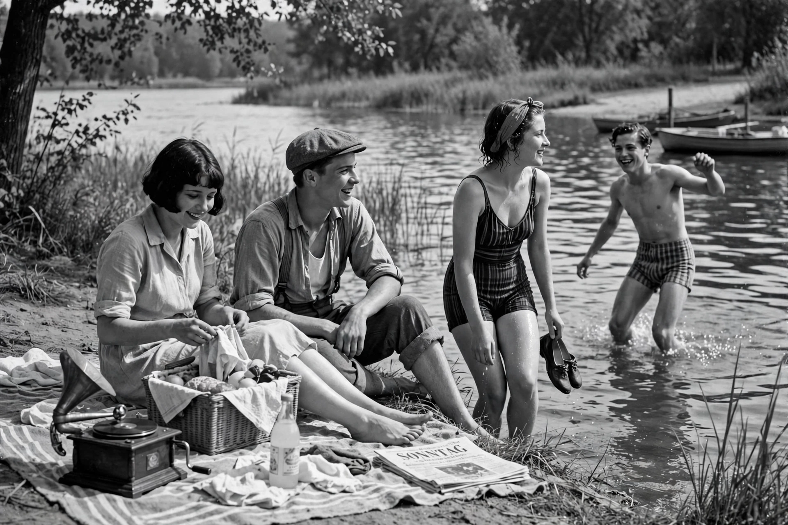

People on Sunday (Menschen am Sonntag, 1930) is a German silent semi-documentary film directed by Robert Siodmak and Edgar G. Ulmer, following young Berliners on a summer Sunday outing.

Made on a tiny budget by young filmmakers who later became major Hollywood figures — Siodmak, Ulmer, screenwriter Billy Wilder, and assistant Fred Zinnemann, with cameraman Eugen Schüfftan — the film used non-professional actors playing versions of themselves: a taxi driver, a wine salesman, a film extra, a model and a record shop worker.
The slight plot — a lakeside picnic, flirtations and quarrels, then Monday returns — is intercut with candid documentary shots of Berlin leisure. A landmark of Weimar cinema and precursor to neorealism, the film survives in restored versions despite lost footage.